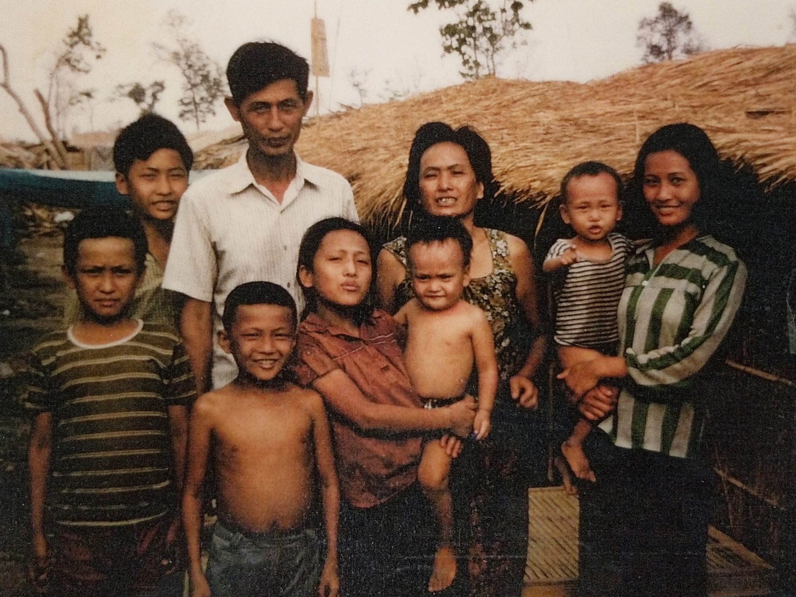
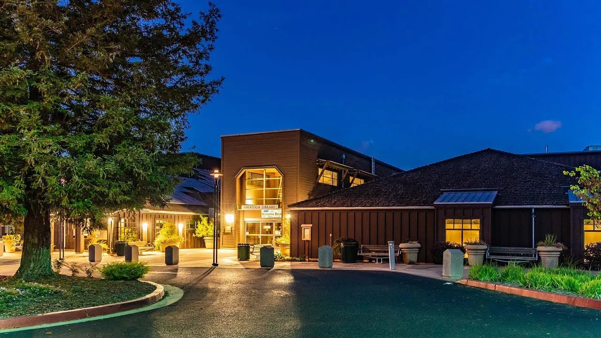
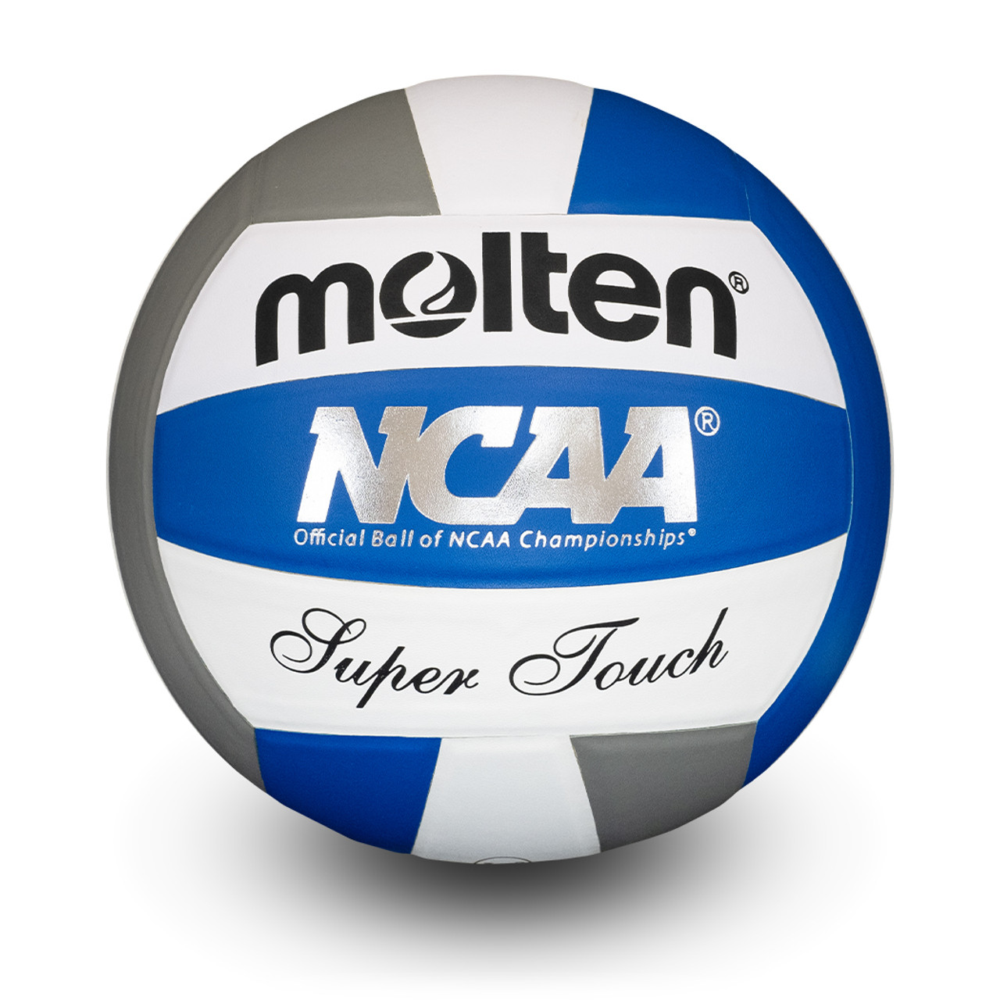

Both sides of my family are ethnically Chinese, but from Cambodia. They escaped Cambodia in the 80s because they wanted to find refuge from the Khmer Rouge, which was the communist party takeover of the state. It was really dangerous during that time because the communist party was trying to do an ethnic cleanse and there were a lot of bombs hiding in the ground. Sometimes my family had to go a lot of days without food. Luckily, they got into refugee camps in Thailand, where they got the chance to come to the U.S.. My mom and her family got sponsored by a church in Oregon, and my dad and his family got sponsored by his cousins in Texas to come to California. Eventually, they ended up in Southern California (SGV) and went to college in that area. My parents met in college. They liked each other so much that they got married and had kids.

I was born in the Bay Area on September 10, 2008. I went to Forest Hill Elementary School, which is in San Jose. As a kid, I took a lot of dance classes and swim classes. My favorite genre of dance at that time was jazz, and my favorite swim stroke at that time was breaststroke. My fondest memory of the Bay Area was a Taiwanese restaurant where I would eat a lot of braised pork rice. I was also a frequent visitor to the Saratoga Library. It was there where I first read my first Garfield comic strip. I loved Garfield so much. My best friend at the time was Mindy. I remember she always had the coolest stationary items and was really funny. I haven’t seen her in a long time.

The summer before sixth grade, I moved to San Diego. I remember thinking it was really different from my old house because it was a little bit of a nicer area. Also because here, sixth grade was still in elementary school. Back in the Bay, I would’ve been a middle schooler. I remember being happy being still in elementary school. My first friend I ever made at Solana Ranch Elementary School was Amit. I don’t know where she is now but she was really nice to me. Sixth grade was really fun, but then Covid-19 started. During the quarantine, I played a lot of Minecraft and Animal Crossing. The first friend I made during the pandemic was Sophie. I became friends with her because I met her in-person when I went to go play volleyball for the first time. We still had to wear masks. Now, I’m a senior at CCA and I’m still friends with Sophie. Thankfully, I just quit volleyball because the school season is over and I’m not playing club. I’m so happy that I quit. I was praying for that day for 5 years. It was also during Covid-19 where I got into mechanical keyboards and modding them. I’m still an amateur because the hobby is pretty expensive to get into, but I have built/modded two keyboards in my free time.